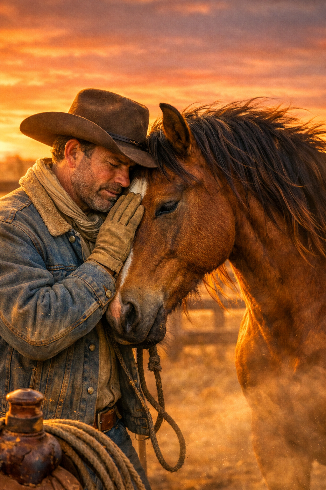

Western stories and charcoal art shaped by grit, dust, and the quiet miles of the frontier.

Daniel McKegan is a Western fiction author and charcoal artist whose work blends frontier grit with quiet, emotional storytelling. His art captures the stillness of the open range, while his writing explores justice, loyalty, and the hard choices men make when no one is watching.
Daniel’s Western novels — including Bring Her Back and Basin Stand-Off — are written with a focus on authenticity, character depth, and the timeless spirit of the American West.
When he’s not writing or drawing, Daniel is building the Cactus Ranch brand: a home for Western art, stories, and the kind of frontier spirit that refuses to fade.
Contact Daniel